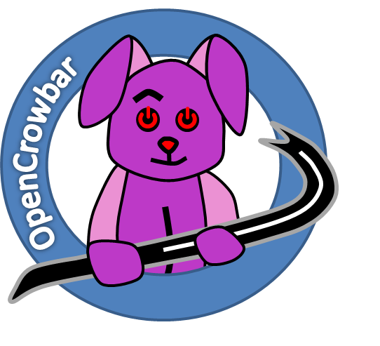

| Crowbar v1 | OpenCrowbar (aka v2) |
|---|---|
| The original Chef integrated provisioning tool. Since 2014, primarily maintained by SUSE for OpenStack deployments. | The re-architected replacement for Crowbar v1 supports a much broader set of operating systems, applications, configuration managers and hardware (physical, virtual and containers). OpenCrowbar is community maintained. |
 |
 |
| Stable Release: Roxy | Stable Release: Anvil |
| Active Development: Stoney | Active Development: Master (Trunk) |
| Ohloh Stats (not updated) | Ohloh Stats |